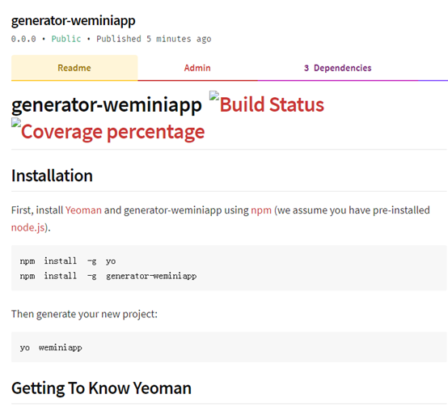

1工具
l Npm （ https://nodejs.org/en/ ）
l Yeoman （npm install -g yo）
l generator-generator （npm install -g generator-generator）
备注说明：
2.输入对应的配置信息之后，代码会帮助我们自动创建一个脚手架的基础版本.生成的代码结构如下:
3.将需要生成脚手架的代码，放置到app/templetes下，并修改app/index.js文件，在write方法添加新的复制文件的路径.
4.初始化项目，加载依赖包.切换到项目下，输入命令npm install
5.将这个脚手架链接到本地，在本地测试，看看是否可行
npm link // 如果提示权限问题请使用sudo npm link
若此命令没有抱任何的错误，此时脚手架已经可以本地使用了。
在本地创建一个项目目录，进入该目录，尝试使用该脚手架，比如现在脚手架项目名称为generator-weminiapp，命令行中应该去掉脚手架项目的前缀“generator-”来运行：yo weminiapp
命令会根据设定的提示和输入信息，Yeoman会一步一步安装你的项目文件，最终生成你指定的项目结构。
效果如下：
6.发布脚手架到npm
1》 若是没有npm账号，则可以通过npm adduser来创建
2》 若是已有npm账号，则可以通过npm login来发布,命令行操作如下:
3》 输入Npm publish命令，进行上传发布,成功的提示如下:
登录npm，查看项目是否上传成功. 具体网址如下: https://www.npmjs.com
点击generator-weminiapp,进入查看项目信息.具体信息如下

新创建一个纯空的文件夹，下载代码.